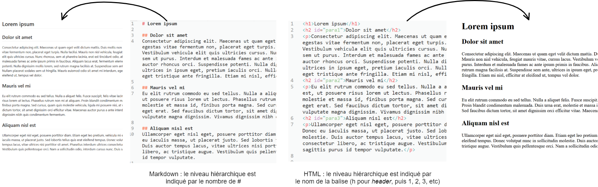

2 Les formats : théorie
2.1 Les formats : un peu d’étymologie
- Format, fromage ? ;
- Dimensions d’une feuille de papier, d’un feuillet ;
- Du latin formare : donner une forme, former, conformer ; arranger, organiser, régler ; façonner
- Extension à de nombreux domaines : imprimerie, photographie, cinéma, informatique
2.2 Vers une définition du format
- ce qui donne une forme et un ensemble de caractéristiques à un ensemble d’information (image, écriture, son, etc.) ;
- la dimension (format A4 ou letter par ex.) qui va impliquer un agencement ;
- une manière de représenter des données (pdf, docx) qui impose une structure
Structure définie de données contenues dans un fichier, établie selon des règles qui régissent notamment leur sauvegarde, leur affichage et leur manipulation par un logiciel compatible. (OQLF, 2022).
2.3 Format et édition savante
- Production de documents scientifiques qui ont des caractéristiques exigées par les normes de l’édition savante :
- appareil critique accompagnant le texte (notes de bas de page, bibliographie, index, etc.) ;
- citabilité (métadonnée → identification) ;
- structuration (normalement) rigoureuse (balisage sémantique, non ambigu) ;
- pérennité
- Les formats utilisés doivent répondre à ces exigences, permettant notamment d’expliciter la fonction de chaque élément du document (titre, citation, métadonnées, références bibliographiques,…)
2.4 Format et extension
À chaque format de fichier est associée une extension de nom de fichier qui permet de l’identifier. [Cette] extension de nom de fichier indique au système d’exploitation quel logiciel d’application peut ouvrir le fichier et quelle icône afficher. (OQLF, 2022)
L’extension d’un fichier texte indique à l’utilisateur et à l’ordinateur quel est son format, c’est-à-dire :
- comment sont organisées les informations relatives au fichiers et les métadonnées
- avec quel logiciel l’ouvrir
- s’il contient ou non des informations de mise en page qu’il faut interpréter
2.5 Formats libres, formats propriétaires
| Formats libres | Formats propriétaires |
|---|---|
| ouverts | fermés (parfois ouverts) |
| spécifications techniques publiques | spécifications techniques contrôlées par une entité privée |
| pas de restriction d’accès | usage limité |
| définis par les pratiques | conditionnés par les pratiques |
| exigences de recherche | exigences commerciales |
| .txt ; .odt ; .tex ; .html ; .svg ; .png ; .epub ; .zip | .pdf ; .docx ; .pptx ; .xlsx ; .ai ; .jpeg ; .psd ; .mp3 |
2.6 Le format n’est pas neutre !
Le format est politique en ce qu’il porte un modèle de l’information.
2.7 Critères d’un format
Le format répond à plusieurs critères : pertinence, économie, efficacité, sécurité.
2.7.1 Pertinence
Certains formats sont plus pertinents que d’autres, dépendant de la discipline, de l’utilisation, de la langue, du contexte,…
Ex. : .pdf a été conçu spécifiquement pour la mise en page de documents prévus pour l’impression
2.7.2 Économie
Quel modèle soutient le format ? Quel poids du document ? Pour quelle possibilité de stockage ?
Ex. : un texte à envoyer rapidement (une note) doit être relativement léger ; pour un texte plus important, on peut prioritiser des fonctionnalités plus complexes, plus permissives mais qui alourdissent le fichier.
2.7.3 Efficacité
Quelle temporalité pour l’écriture et la finalisation du document ?
2.7.4 Sécurité
Le contenu est-il garanti ? Quelles protection pour les données ? Quelle pérennité pour le document ?
2.8 Format, logiciel, extension
- un format n’est pas un logiciel : parler du format Word, c’est faux ;
- un format n’est pas une extension : changer l’extension ne change pas le format.
Le format va structurer une information, va lui donner une forme, va délimiter son utilisabilité, les manipulations qui vont être possibles ou non.
2.9 Structuration de l’information
Nous devons faire la distinction entre :
- le corps du document,
- les métadonnées,
- le contenu additionnel, comme la bibliographie.
2.10 Formats de balisage
- un format de balisage : des balises pour structurer et qualifier le texte (.md, .html, .xml) ;
- un format de balisage léger : compréhensible par les humains ;
- un format transformable : format source facilement interprétable pour obtenir un format de sortie riche
- un format pérenne : encore utilisable dans 10 ans (car porté par une communauté et des standards)
2.10.1 Texte brut, texte enrichi
Les informations de mise en forme sont des annotations qui sont formées selon plusieurs standards ou normes.
- texte brut (ou plain text) : texte dépourvu d’information de mise en forme, qui se limite à l’affichage de la traduction des données binaires en caractères alphanumériques et symboles ;
- texte enrichi (ou rich text) : texte qui comporte des éléments de mise en forme, qu’ils soient ou non affichés dans l’interface graphique ; Un fichier de texte peut contenir des indications de mise en forme.
Les normes et standards encadrant la manière de former les annotations sont étroitement liées au format du document et au standard qu’il suit.
2.10.2 WYSIWYM vs WYSIWYG
| WYSIWYM | WYSIWYG |
|---|---|
| What You See Is What You Mean | What You See Is What You Get |
| éditeur de texte quie présente un texte enrichi avec sa mise en forme, de manière simultanée | éditeur de texte qui présente le texte et ses informations de mise en forme dans les interpréter |
2.10.3 WYSIWYM
- dans un éditeur WYSIWYM : moindre confusion entre mise en forme et indication de la structure logique
- la mise en forme apparaît après parsing du document (création d’un PDF ou ouverture dans un navigateur)
- le paramétrage de la mise en forme peut être géré dans un fichier externe (ex: CSS pour HTML)

2.11 Mettre en forme =/= structurer
| Mise en forme | Structure logique |
|---|---|
| Du texte en gras | Un titre |
| Du texte en italique | Un titre, un mot étranger |
| Du texte entre guillements | Une citation |
2.12 Markdown
- Inventé en 2004 par John Gruber et Aaron Swartz ;
- Markdown est un langage de balisage léger qui permet d’encoder facilement la structure et certains éléments de mise en forme du texte sans gêner sa lecture ;
- Il permet de créer des fichiers HTML ou PDF et est beaucoup utilisé sur le Web, notamment sur des plateformes comme Github ;
- Même non compilé, un texte Markdown est facile à lire car les annotation sont légères et limitées ;
- On peut utiliser Markdown ou un système similaire dans Whatsapp et Messenger.
(Plus d’informations : Simpkin 2015)
Exercice : Faire ce tuto (en classe) : https://www.arthurperret.fr/tutomd/
2.13 LaTeX
- LaTeX est un langage et un système de composition de documents, bien plus complet que Markdown ;
- Utilisé dans le domaine des sciences car on peut facilement écrire des formules mathématiques :
- Les balises sémantiques de LaTeX sont plus “invasives”. Exemple :
\chapter{Titre de chapitre}; - Pour voir la mise en forme, on doit compiler le fichier .tex. On obtient généralement un PDF ;
- LaTeX ne sert pas qu’à annoter la structuration logique : il prend en charge la mise en forme du document au sens large.
2.14 CSV
CSV (Comma Separated Values) - données tabulaires
- 1 ligne de texte = 1 ligne de tableau ;
- 1 virgule = 1 nouvelle cellule de tableau ;
- un ficher csv peut être ouvert avec Excel.
Id_Monographie,Id_Enqueté,Serie_Tome,Prénom,Nom,Place dans la famille 001a,001aE1,1-1 (1857),Jean,M,Père 001a,001aE2,1-1 (1857),Marie,R,Mère 001a,001aE3,1-1 (1857),Joseph,M**,Fils,